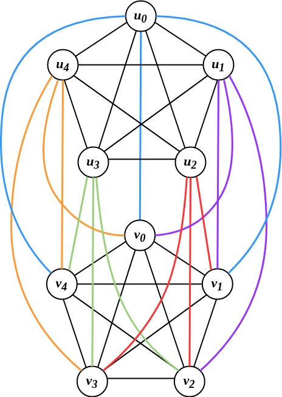
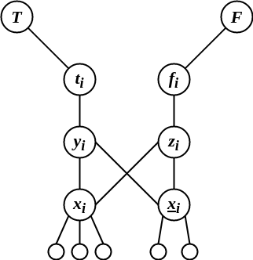
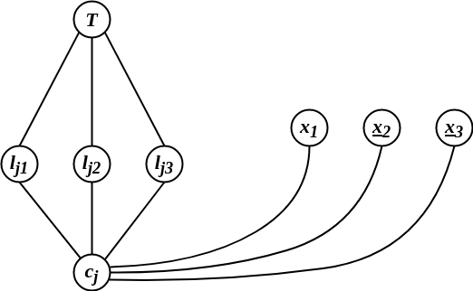
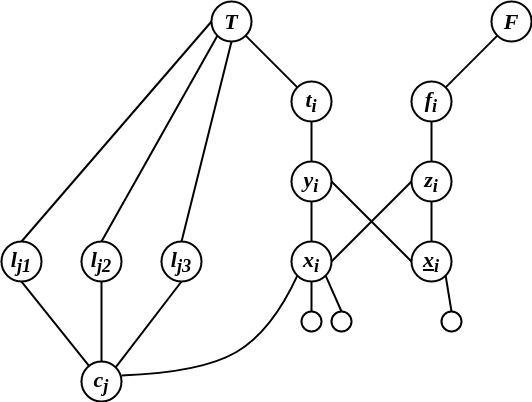

AR - Lesson 07-08
Indice
Fin ora abbiamo analizzato le reti dal punto di vista statistico, disinteressandoci delle caratteristiche dei singoli nodi e soffermandoci su ciò che mediamente accadeva. …
1 Reti con struttura disomogenea
1.1 Esperimento di Granovetter
Nel 1960, il sociologo Mark Granovetter prosope il seguente esperimento nella sua tesi di dottorato:
intervistò una serie di persone che di recente avevano cambiato lavoro, facendo domande poste a capire in che modo erano venuti a conoscenza della nuova opportunità lavorativa.
Come ci si può aspettare la gran parte delle persone erano venuti a conoscenza dell'opportunità da lavoro tramite passaparola.
Ciò che invece era meno atteso, è che un gran numero di volte l'informazione arrivò da gente che si conosceva superficialmente.
Questo fu sorprendente perché ci si aspetta che gli amici più stretti siano quelli più interessati ad aiutarsi nel momento del bisogno.
Una risposta al fenomeno proposta da Granovetter fu che le persone a noi strette in realtà tendono ad avere le stesse nostre informazioni.
Infatti è normale che se frequentino più o meno gli stessi posti e persone di un amico stretto.
Oppure, se ho una relazione stretta con una persona è perché ci ho parlato molto nel tempo, e quindi tutte le informazioni importanti che tale persona poteva darmi
me le avrà già date in passato.
Contrariamente, una persona che conosco poco probabilmente frequenterà altri posti e persone, e quindi avrà accesso ad altre fonti di informazioni che provengono
al di fuori della mia comunità.
1.2 Bridges e Local Bridges
Come si può intuire dall'esperimento di Granovetter i contatti che più sono rilevanti nella diffusione di informazioni in una rete sono quei contatti che collegano due comunità differenti.
Sulla base di questo si può definire il concetto di bridge edge, ovvero tutti quegli archi la cui rimozione disconnette la rete.
Ovviamente i bridge edges sono archi cruciali per l'accesso alle informazioni, in quanto senza di essi una informazione non potrebbe uscire dalla sua componente.
In una rete sociale reale (e artificiale) è davvero molto poco probabile che esistano bridge edges, anche perché sappiamo già che le reti sociali presentano delle componenti giganti con buona probabilità. Rilassiamo quindi la totale disconnessione dovuta alla rimozione di tali archi, e definiamo il concetto di local bridge. Formalmente un arco \((u,v)\) è detto local bridge se \(u\) e \(v\) non hanno altri amici in comuni, ovvero se \(N(u) \cup N(v) \equiv \emptyset\).

Figura 1: In rosso il local bridge
Possiamo vedere i local bridge come archi la cui rimozione aumenta la distanza tra le due estremita di almeno 2.
1.3 Strong & Weak Ties
L'esperimento di Granovetter mostra che le informazioni sono veicolate tramite le conoscenze più deboli, proprio perché permettono di accingere ad altre fonti di informazioni.
Possiamo quindi definire un modello di rete in cui gli archi sono partizzionati tra archi forti (strong ties) e archi deboli (weak ties), che appunto rappresentano
i tipi di legami che le persone possono avere.
Certamente in un contesto reale esiste un largo range di tipi di amicizie e conoscenze che ci possono essere tra due individui, però per semplicità cataloghiamo
i tipi di conoscenze solo nelle due categorie strong e weak.
Più formalmente definiamo questo modello con un grafo \(G=(V,S\cup W)\), dove \(S\) è l'insieme degli strong ties e \(W\) è quello dei weak ties. Importante specificare che i due insiemi sono disgiunti, infatti una persona non può essere sia amica stretta che amica superficiale di un'altra (a meno che non sia una persona falsa, ma questo è un altro discorso…). \[ S \cup W \equiv \emptyset \]
1.4 The Strong Triadic Closure Property
Consideriamo lo stato di una rete sociali in un dato istante, sarebbe interessante sapere come si evolve nel tempo e quali sono i meccanismi che portano alla creazione
o alla rottura di nuovi archi.
Un principio abbastanza intuitivo è il seguente:
se due nodi hanno un amico stretto in comune, allora è molto probabile che in futuro entrino in contatto e stabiliscano anchessi un rapporto di amicizia stretta.
Ciò che si genera quindi tra i tre nodi in questione è la cosidetta chiusura triadica.
Pensando la chiusura triadica in termini di strong e weak ties possiamo definirla secondo la seguente regola
Sia il nodo \(a\) e due suoi vicini \(b\) e \(c\), allora l'arco \((b,c)\) probabilmente si creerà se \((a,b),(a,c) \in S\), ovvero se sono strong ties.
Diremo che quindi il nodo \(u\) rispetta la Strong Triadic Closure Property (STCP in breve) se
\[
\forall (u,v), (u,w) \in S \left[ (v,w) \in S \cup W \right]
\]
Infine diciamo che \(G\) soddisfa la STCP se tutti i suoi nodi la soddisfano.
Se si osserva bene, quando una rete soddisfa la STCP essa si stabilizza secondo la regola precedentemente descritta, ovvero in futuro non si genereranno più altri archi.
1.5 STCP e Local Bridges
THM
Sia una rete \(G=(V,S\cup W)\), un nodo \(u \in V\) che soddisfa la STCP e due suoi vicini \(x,y\) tali che \((u,x) \in S\) e \((u,y)\) è un local bridge (ovvero \(N(u) \cup N(y) \equiv \emptyset\) )
allora certamente \((u,y) \in W\) (è un weak tie).
Proof
Se per assurdo \((u,y) \in S\).
Dato che \(u\) soddisfa la STCP allora deve essere vero che esiste l'arco \((x,y)\), e quindi \(x \in N(y)\).
Ma poiché \(N(u) \cup N(y) \equiv \emptyset\) e \(x \in N(u)\), allora deve essere vero che \(x \not\in N(y)\) (assurdo)
\(\implies (u,y) \in W\) \(\square\).
Il teorema precedentemente enunciato mostra come una proprietà che ha effetti globali (ovvero essere un local bridge) involve in una
proprietà strettamente locale (ovvere essere un weak ties).
Infatti la proprietà di weak ties è visibile dal punto di vista locale da parte di un nodo: ogni persona sà se un suo amico è stretto o alla lontana.
Viceversa, la proprietà di un arco di essere un local edge non intuibile da parte di un nodo.
Infatti, dato che un nodo conosce solo il suo vicinato non può sapere sapere se ha vicini in comune con un altro suo vicino.
2 Comunità e Coefficiente di Clustering
Abbiamo definito in precedenza un modello di rete dinamica i cui archi si modificano nel tempo, e dove la rete si stabilizza nel momento
in cui essa soddisfa la STCP.
Dato che si generano tanti triangoli, allora nel grafo stabilizzato si creeranno gruppi di nodi fortemente coesi da una densa quantità di archi.
Chiameremo questi gruppi fortemente coesi comunità, o cluster.
La precedente è una definizione informale e discorsiva.
Dal punto di vista formale, quando possiamo dire che un gruppo di nodi è abbastanza coeso da essere definito comunità?
E che significa coeso?
Per fare ciò iniziamo col quantificare la coesione del nodo \(u\) all'interno dei suoi vicini. Sia quindi il coefficiente di clustering
\begin{align*} c(u) &= \frac{ \vert \lbrace (x,y) \in E : x \in N(u) \land y \in N(u) \rbrace \vert }{ \binom{N(u)}{2} }\\ &= \frac{ \vert \lbrace (x,y) \in E : x \in N(u) \land y \in N(u) \rbrace \vert }{ \frac{ \vert N(u) \vert (\vert N(u) \vert - 1) }{2} } \end{align*}
Intuitivamente tale valore cerca di misuare quanto un nodo \(u\) è ben inserito nel gruppo sociale formato dai suoi vicini.
Infatti tale quantità calcola il rapporto tra i triangoli che coinvolgono \(u\) e il numero massimo possibile di relazioni che possono
esistere tra tutti i suoi vicini.
Se un nodo ha un coefficiente di clustering basso vuol dire che si trova in una posizione periferica rispetto ai suoi mici.
Viceversa, un nodo con un coefficiente di clustering è ben inserito tra i suoi amici, e quindi diremo che è un elemento centrale nella
sua cerchia di conoscenze.
Possiamo quindi vedere e riferirci al coefficiente di clustering come indice di centralità di un nodo.
Analogamente possiamo definire un coefficiente di clustering relativo a un sottoinsieme \(C\) di nodi. Ovvero, dato un sottoinsieme \(C \subseteq V\) definiamo il coefficiente di clustering di \(u\) relativo a \(C\) come la quantità
\begin{align*} c_C(u) &= \frac{ \vert \lbrace (x,y) \in E : x \in N(u) \cap C \land y \in N(u) \cap C \rbrace \vert }{ \binom{N(u) \cap C}{2} }\\ &= \frac{ \vert \lbrace (x,y) \in E : x \in N(u) \cap C \land y \in N(u) \cap C \rbrace \vert }{ \frac{ \vert N(u) \cap C \vert (\vert N(u) \cap C \vert - 1) }{2} } \end{align*}
Questa quantità definisce quanto il nodo \(u\) è integrato all'interno del sottoinsieme di nodi \(C\):
più il coefficiente \(c_C(u)\) è elevato più \(u\) è centrale all'interno di \(C\), contrariamente più è basse, meno \(u\) è integrato.
Perciò potremmo dire che se \(C\) ha tutti nodi con coefficiente di clustering alto, allora \(C\) è una comunità (o cluster).
Ma di preciso quanto deve essere elevato questo valore per poter dire che \(C\) è una comunità?
Inoltre il coefficiente di clustering è un buon fattore da considerare per identificare le comunità?
3 Alcuni tipi di Comunità
3.1 Cut-Communities
Dato un grafo \(G = (V,E)\) e una coppia di nodi \(s,t \in V\), diciamo che una cut-community rispetto a \(s,t\) è un sottoinsieme proprio e non vuoto dei nodi \(C \subset V\) (con \(C \not\equiv \emptyset\)) tale che \(s \in C\) e \(t \in \overline{C} \equiv V \setminus C\), e tale che questo sottoinsieme minimizza gli archi del taglio \((C,\overline{C})\), ovvero \[ \vert (C, \overline{C}) \vert = \min_{A \subset V}{\lbrace \vert (A, \overline{A}) \vert : s \in A \land t \in \overline{A} \rbrace } \]
Citando il Max-Flow/Min-Cut Theorem, trovare un \( s \)-\( t \) cut minimo equivale a trovare il flusso massimo tra \(s\) e \(t\).
Perciò, dati \(s\) e \(t\) possiamo trovare una cut community grazie all'algoritmo di max-flow Ford&Fulkerson.
Perciò, per trovare una cut comunity che sia la più coesa possibile (quindi una cut-community non necessariamente riferita a due nodi \(s,t\)), si potrebbero calcolare
tutti gli \( s \)-\( t \) cut minimi e scegleire quello più piccolo, ovvero basta calcolare un taglio minimo del grafo.
Osservare che questo si può fare in tempo polinomiale1, perciò possiamo affermare che il problema decisionale che stabilisce se un grafo è partizionabile in due
cut-communities è collocato nella classe di complessità P.
Il problema di questo metodo è che non c'è modo di controllare la dimensione della comunità \(C\) risultante, infatti potrebbe capitare
che \(C\) sia composta dal solo elemento \(s\), e ciò è in disaccordo col concetto intuitivo di comunità (una sola persona non può costituire
una comunità).
Consideriamo infatti il seguente esempio:

Figura 2: Controesempio
abbiamo un grafo \(G\) composto dall'unione di due clique \(K_5\) \[ G = K_5^{(u)} \cup K_5^{(v)} \]
Oltre agli archi delle due clique, per ogni nodo \(u_i \in K_5^{(u)}\) esistono i tre archi \((u_i, v_{i-1 \mod{5}}), (u_i, v_i), (u_i, v_{i + 1 \mod{5}})\) (come mostrato nella precedente figura).
Se si osserva bene, comunque scegliamo un nodo \(x\), l'unico taglio minimo è del tipo \((\lbrace x \rbrace, V \setminus \lbrace x \rbrace)\), di dimensione 7.
Infatti, se aggiungessimo un qualsiasi nodo insieme ad \(x\) otterremmo un taglio di dimensione strettamente maggiore di 7.
Per esempio \( 12 = \vert (\lbrace u_0, u_1 \rbrace, V \setminus \lbrace u_0, u_1 \rbrace ) \vert > \vert (\lbrace u_0 \rbrace, V \setminus \lbrace u_0 \rbrace ) \vert = 7 \).
Se ci riveriamo alla definizione di cut-cumminity, non ha molto senso dire che il solo nodo \(u_0\) compone una comunità, per questo è necessario dare una nuova definizione di comunità.
3.2 Web-Communities
Una (strong) web-community un sottoinsieme proprio e non vuoto \(C \subset V\), tale che i nodi che lo compongono hanno più vicini all'interno di \(C\) stesso anzichè all'esterno, ovvero \[ \forall u \in C \left[ \vert N(u) \cap C \vert > \vert N(u) \setminus C \vert = \vert N(u) \cap (V \setminus C) \vert \right] \] Alternativamente è comodo guardare alla precedente proprietà come il fatto che almeno la metà dei vicini di \(u\) è all'interno di \(C\) \[ \frac{\vert N(u) \cap C \vert}{\vert N(u) \vert} > \frac{1}{2} \]
Rilassando la relazione di maggioranza stretta, possiamo definire in maniera analoga una weak web-community qualsiasi sottoinsieme \(C\) non vuoto e proprio di \(V\) tale che \[ \frac{\vert N(u) \cap C \vert}{\vert N(u) \vert} \geq \frac{1}{2} \]
3.3 Relazione tra cut- e web-communities
Il concetto di cut-community e weak web-community sono in realtà strettamente correlati, risultando nel seguente teorema
THM Sia un grafo \(G = (V,E)\). Se \(G\) ha una cut-community \(C \subset V\) tale che \(|C| > 1\), allora \(C\) è anche una weak web-community. Più formalmente, dato un sottoinsieme \(C \subset V\) tale che \[ \vert (C, V \setminus C) \vert = \min_{A \subset V}{ \lbrace \vert (A, V \setminus A) \vert \rbrace }\\ \land\\ 1 < \vert C \vert < \vert V \vert \] allora \[ \forall u \in C \; \left[ \vert N(u) \cap C \vert \geq \vert N(u) \setminus C \vert \right] \]
Proof Supponiamo per assurdo che l'insieme \(C\) non sia una weak web-community, ovvero che \[ \exists u \in C : \vert N(u) \cap C \vert < \vert N(u) \setminus C \vert \] Dato che \(C\) ha almeno due elementi, allora \(C \setminus \lbrace u \rbrace , (V \setminus C) \cup \lbrace u \rbrace )\) è un taglio del grafo. Calcoliamo ora la dimensione di questo nuovo taglio
\begin{align*} \vert (C \setminus \lbrace u \rbrace , (V \setminus C) \cup \lbrace u \rbrace ) \vert &= \vert (C, V \setminus C) \vert + \underbrace{\vert N(u) \cap C \vert - \vert N(u) \setminus C \vert}_{< 1}\\ &< \vert (C, V \setminus C) \vert \end{align*}
Quindi abbiamo trovato un altro taglio minore \((C, V \setminus C)\), e questo è assurdo in quanto essendo \(C\) per ipotesi una cut-community deve essere vero che
\((C, V \setminus C)\) è un taglio minimo di \(G\).
Perciò necessariamente è falsa l'ipotesi che \(C\) non sia una weak web-community \(\square\).
Anche se esiste un algoritmo polinomiale che decide se un grafo è partizionabile in cut-community, non ne conosciamo un che decida in tempo polinomiale se un grafo è
partizionabile in web-communities.
Infatti, sappiamo trovare due cut-communities \(C\), \(V \setminus C\) che generino un taglio minimo, ma non sappiamo garantire che \(\vert C \vert > 1\) e \(\vert V \setminus C \vert > 1\).
In realtà, non solo non conosciamo un algoritmo che possa farlo in tempo polinomiale, ma è possibile dimostrare che tale problema è NP-completo2.
Definiamo qundi il problema Strong Web-Community Partitioning (SWCP) il problema decisionale che si occupa di stabilire se dato un grafo \(G\) esiste un sottoinsieme dei nodi \(C\) tale
che \(C\) e \(V \setminus C\) sono due strong web-community.
THM il problema SWCP è un problema NP-completo.
Prima di procedere alla dimostrazione di questo teorema enunciamo e dimostriamo il seguente lemma
Lemma Sia \(G\) un grafo partizionabile in due strong web-community. Se esiste un nodo \(u\) di grado esattamente 2, allora necessariamente \(u\) e i suoi due vicini devo appartenere alla stessa comunità.
Proof Consideriamo una partizione in due strong web-communities \(C, V \setminus C = \overline{C}\), e siano \(v, w\) i due soli nodi vicini di \(u\). Supponiamo per assurdo che \(v \in C\) e \(w \in \overline{C}\). Dato che \(C, \overline{C}\) è una partizione di \(V\), allora necessariamente o \(u \in C\) o \(u \in \overline{C}\). Se \(u \in C\) avremo che \(\vert N(u) \cap C \vert = \vert N(u) \setminus C \vert\), e quindi \(C\) non sarebbe una strong web-community. Allora deve essere che \(u \in \overline{C}\), però avremo \(\vert N(u) \cap \overline{C} \vert = \vert N(u) \setminus \overline{C} \vert\), e quindi \(\overline{C}\) non è una strong web-community. Perciò non può essere vero che \(v \in C\) e \(w \in \overline{C}\), quindi \(u,v,w\) devono necessariamente appartenere alla stessa comunità \(\square\).
Procediamo ora alla dimostrazione del teorema
Proof (THM)
Innanzitutto è facile verificare che SWCP è un problema in NP, basta mostrare un certificato polinomiale.
Un certificato polinomiale banale è prorpio un sottoinsieme di nodi \(C\) tale che \(C\) e \(V \setminus C\) sono due strong web-communities.
Per verificarne invece la completezza, è necessario mostrare una riduzione da un problema già noto essere NP-completo al problema in questione.
In questo caso verrà mostrata una riduzione dal problema 3-SAT.
\[ \mbox{3-STA} \preccurlyeq_{P} SWCP \]
Consideriamo quindi una formula \(\phi = c_1 \land c_2 \land ... \land c_m\) in 3-CNF, con variabili in \(X = \lbrace x_1, x_2, ..., x_n \rbrace\).
Costruiamo quindi il grafo \(G\) come segue.
L'insieme dei nodi \(V\) contiene i nodi \(T\) e \(F\), che rappresenteranno le assegnazioni true e false.
Questi due nodi sono posizionati nel grafo in modo tale che essi dovranno necessariamente appartenere a due comunità differenti affinché \(G\) sia partizionabile in due
strong web-community.
Per ogni variabile \(x_i \in X\) costruiamo un gadget variabile come seuge:
- inseriamo in \(V\) i nodi \(x_i, \overline{x_i}, y_i, z_i, t_i, f_i\).
- inseriamo in \(E\) gli archi \((x_i,y_i), (x_i,z_i), (y_i,t_i), (t_i,T), (\overline{x_i}, z_i), (\overline{x_i}, y_i), (z_i, f_i), (f_i, F)\).
- per il nodo \(x_i\) aggiungiamo tanti vicini senza nome, tante quante sono le clausole che contengono \(x_i\). più 1.
- stessa cosa per \(\overline{x_i}\) come nel punto 3.

Figura 3: Esempio gadget variabile.
Osserviamo che se \(T\) ed \(F\) appartongono a due comunità differenti, allora anche \(x_i\) ed \(\overline{x_i}\) apparterranno a due comunità differenti.
Infatti, senza perdita di generalità poniamo \(T \in C\) e \(F \in \overline{C}\): poiché \(t_i\) e \(f_i\) hanno entrambi grado 2, per il Lemma precedente deve necessariamente essere vero che
\(t_i, y_i \in C\) e \(f_i, z_i \in \overline{C}\).
Poiché \(y_i\) ha grado 3, allora almeno 1 tra \(x_i\) e \(\overline{x_i}\) deve appartene a \(C\).
Stessa cosa per \(z_i\), poiché ha grado 3 allora almeno 1 tra \(x_i\) e \(\overline{x_i}\) deve appartene a \(\overline{C}\).
Infine, poiché \(y_i\) e \(z_i\) non devono poter essere raggiungibili (altrimenti apparterrebbero alla stessa comunità), allora possiamo dire che o \(x_i\) appartiene e \(C\) e \(\overline{x_i}\) a \(\overline{C}\),
oppure viceversa.
Infine, collocati i nodi \(x_i\) e \(\overline{x_i}\) nelle rispettive comunità, essi si porteranno appresso i rispettivi vicini senza nome.
Continuando, per ogni clausola \(c_j\) di \(\phi\), definiamo un gadget clausola come segue:
- inseriamo in \(V\) un nodo \(c_j\) e un nodo per ognuno dei suoi letterali \(l_{j1},l_{j2},l_{j3}\).
- in \(E\) inseriamo gli archi da \(c_j\) verso \(l_{j1},l_{j2},l_{j3}\) e dai nodi \(l_{j1},l_{j2},l_{j3}\) verso il nodo \(T\).
- infine aggiungiamo in \(E\) un arco da \(c_j\) verso ognuno dei letterali che lo compongono: se in \(c_j = x_1 \lor \overline{x_2} \lor \overline{x_3}\) ollra inseriamo gli archi \((c_j,x_1), (c_j,\overline{x_2}), (c_j,\overline{x_3})\).

Figura 4: Esempio gadget clausola.
Notiamo che sempre per il Lemma precedente, dato che \(l_{j1},l_{j2},l_{j3}\) hanno tutti grado 2, allora se \(G\) è partizionabile in due strong web-community certamente sia \(l_{j1},l_{j2},l_{j3}\)
che \(c_j\) devono essere nella stessa comunità a cui appartiene \(T\).
Inoltre poiché \(c_j\) ha grado esattamente \(6\), e poiché 3 dei suoi vicini sono nella comunità a cui appartiene \(T\), allora basta che almeno uno tra i suoi letterali (nell'esempio predente \(x_1, \overline{x_2}, \overline{x_3}\))
appartenga anch'esso alla comunità in cui si trova \(T\).
Dalla costruizione appena fatta emerge che quindi \(c_j\) deve appartenere alla stessa comunità a cui appartiene \(T\), e per rendere ciò possibile almeno uno dei letterali che lo compongono deve appartenere alla stessa comunità.
Iniziamo col dimostrare che \(T\) ed \(F\) devono necessariamente appartenere a due comunità differenti, e questo verrà dimostrato dimosrtando che se \(T\) ed \(F\) appartengono alla stessa comunità \(C\) allora \(C \equiv V\)
\[
T, F \in C \Leftrightarrow C \equiv V
\]
Iniziamo con l'osservare che se \(T,F\) appartengono alla stessa comunità \(C\) allora anche i nodi \(y_i\) e \(z_i\) appartengono a \(C\), per ogni \(i = 1, 2, ..., n\).
Consideriamo il letterale \(x_i\) che è contenuto in \(k\) clausole del tipo \(c_j\).
Poichè ognuna di queste clausole sono per costruzione nella stessa comunità di \(T\) (e quindi in \(C\)) e poiché \(x_i\) ha a altri due suoi vicini \(y_i, z_i\) in \(C\), risulterà che più della metà dei suoi vicini sono in \(C\).
Infatti risulta che \(x_i\) ha esattamente \(k+2\) vicini in \(C\) più altri \(k+1\) nodi senza nome.
Perciò, dovunque insieriamo qui \(k+1\) nodi senza nome, per forza \(x_i\) deve stare in \(C\).
Stesso ragionamento per \(\overline{x_i}\).
Infine poiché i nodi senza nome hanno un solo vicino (che sicuramente sta in \(C\)), possiamo concludere che tutti i nodi del grafo stanno in \(C\).

[DA FINIRE]